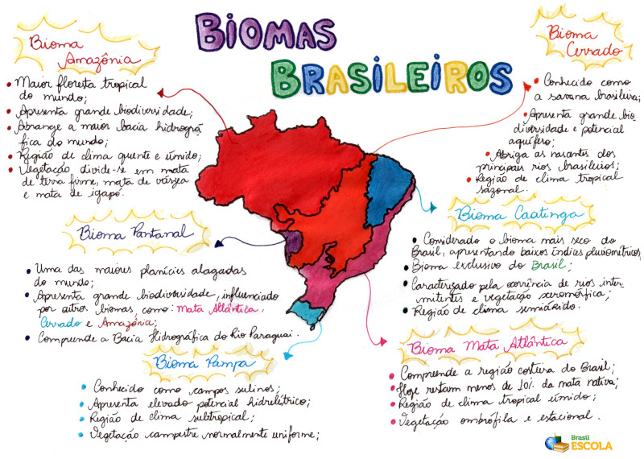

Biomas Brasileiros
Entenda os biomas do País
Biomas Brasileiros
Biomas brasileiros são regiões que compreendem grandes ecossistemas constituídos por uma comunidade biológica com características semelhantes. Segundo o Instituto Brasileiro de Geografia e Estatística (IBGE), o Brasil possui seis biomas: Cerrado, Amazônia, Caatinga, Mata Atlântica, Pantanal e o Pampa.
O bioma Amazônia compreende uma área na qual se encontra a maior floresta tropical do mundo. A Floresta Amazônica estende-se por nove países da América do Sul, sendo sua maior porção localizada no Brasil, ocupando cerca de 40% do território. É o maior de todos os biomas brasileiros. Caracteriza-se pela presença de diversos ecossistemas e por deter grande biodiversidade na fauna e na flora. Esse bioma compreende uma região constituída pela maior bacia hidrográfica do mundo: a Bacia Amazônica.
O Cerrado é considerado o segundo maior bioma da América Latina e do Brasil. Conhecido como savana brasileira, apresenta grande biodiversidade e compreende uma área de elevado potencial aquífero. Esse bioma caracteriza-se por apresentar diversas fitofisionomias em virtude dos vários contatos geográficos que possui com outros biomas. Ao norte, limita-se com o bioma Amazônia; a leste e ao nordeste, com a Caatinga; ao sudoeste, com o Pantanal; e a sudeste, com a Mata Atlântica.
O bioma Caatinga compreende cerca de 11% do território brasileiro, ocupando boa parte da Região Nordeste até a porção norte de Minas Gerais. O nome dado a esse bioma tem origem indígena e significa “floresta branca”, denominação que remete às características dessa vegetação ao longo da estação seca. Considerado o bioma mais seco, a Caatinga apresenta baixos índices pluviométricos.
O bioma Mata Atlântica ocupa cerca de 13% do território brasileiro e compreende a região costeira do Brasil, indo dos estados do Rio Grande do Norte ao Rio Grande do Sul. Esse bioma é composto por variados ecossistemas florestais e por uma biodiversidade semelhante à do bioma Amazônia. Hoje resta menos de 10% da mata nativa, que sofre com o intenso desmatamento, responsável pela extinção de diversas espécies desse bioma.
O bioma Pantanal é considerado uma das maiores planícies alagadas do mundo, compreendendo os estados do Mato Grosso e Mato Grosso do Sul. É o menor bioma em extensão territorial do Brasil, ocupando cerca de 2% do território nacional. É um bioma com grande biodiversidade, que vem sendo ameaçada pela ação antrópica. Esse bioma sofre influência de outros biomas, como Amazônia, Cerrado e Mata Atlântica.
O bioma Pampa, conhecido também como Campos Sulinos, ocupa cerca de 2% do território brasileiro, abrangendo o território do estado do Rio Grande do Sul. O nome “pampa” tem origem indígena e designa uma região plana. A paisagem desse bioma é composta, em sua maioria, por campos nativos. O Pampa apresenta grande biodiversidade.
© Produzido por: Tainá Silva e Vithória Gomes, Inc